// ABOUT_ME.exe
This is just a page to learn a little bit about me outside of coding :D.
- I am currently a Computer Science MSci student at the University of Nottingham.
- I enjoy building things and getting involved in lots of projects.
- At uni, I'm involved with HackSoc and have been involved with organising HackNotts 26.
- Outside of comp sci, I love drawing, reading, travelling and photography. I'm always trying to learn something new!
Started working as a tutor :)!
I began working at Explore Learning as an online Maths + English tutor, tutoring children aged 4-16 including those studying for the 11+ and GCSEs.
Started Computer Science
Started studying Computer Science at the University of Nottingham
Got involved with societies and the University.
- Welfare Secretary at HackSoc (the UoN's Computer Science society)
- Volunteered to be a student mentor to first year students
Societies, events, and so much more...
- Participated in Royal Hackaway
- Created a poster for Lovelace Colloquium 2026 at University of Bath
- Elected to General Secretary at HackSoc
- Chosen to be a Logisitics Officer for HackNotts 26
- Volunteered and selected to be a Senior Mentor for first year students and to guide mentors
- Summer School in Aarhus University (Denmark) where I learnt C++ and software design with it's inventor, Dr Bjarne Stoustrup
More to come!
Drawing
I like to draw mainly portraiture using graphic pencil and oil paints :]
Reading
I was nominated the book worm award in Primary School and still am one...
Travelling
Travelling has always been a dream of mine
Photography
Way toooo many photos in my camera roll!!
Archery
New side quest at University, which has been really fun!
Languages
Currently, I can speak Mandarin Chinese, but learning Spanish now too.
These are just some cool things I've seen and done:
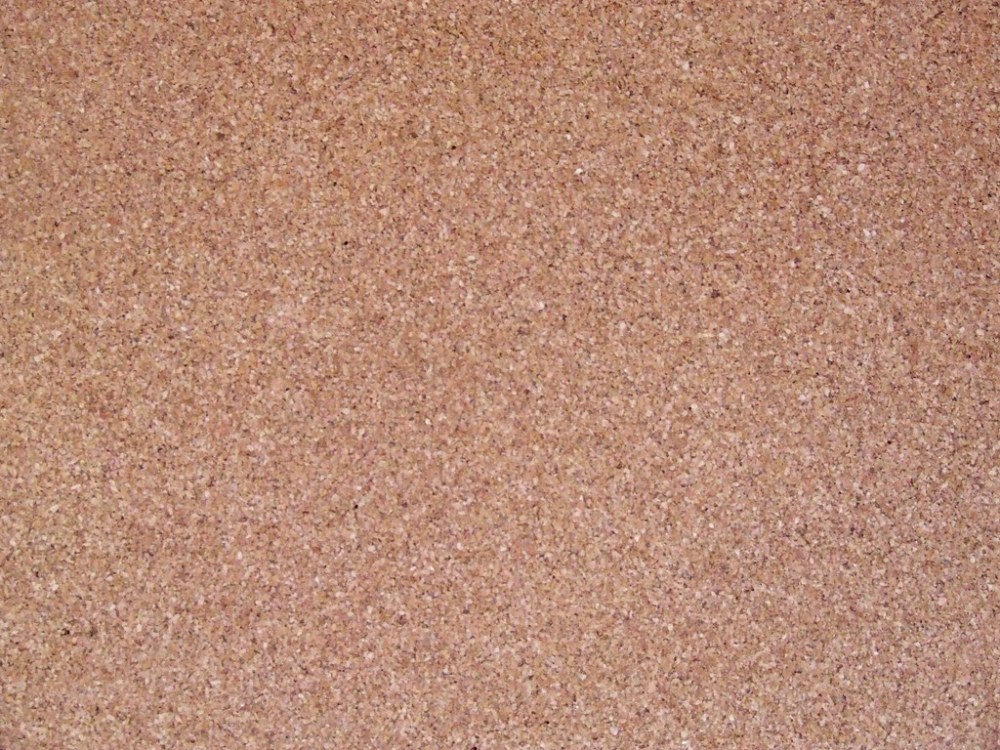
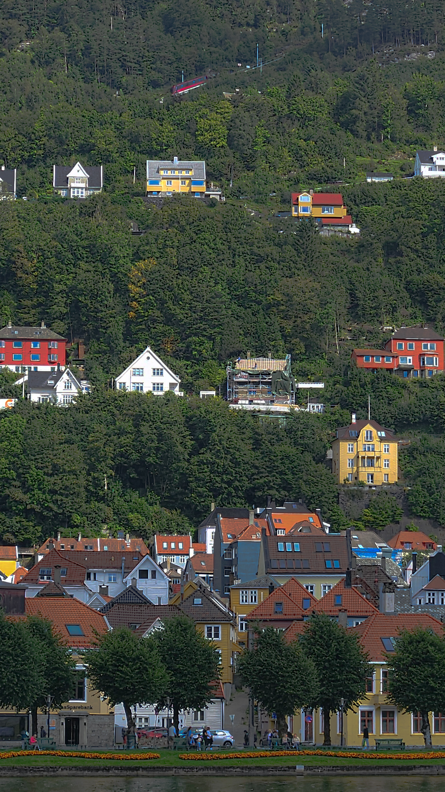
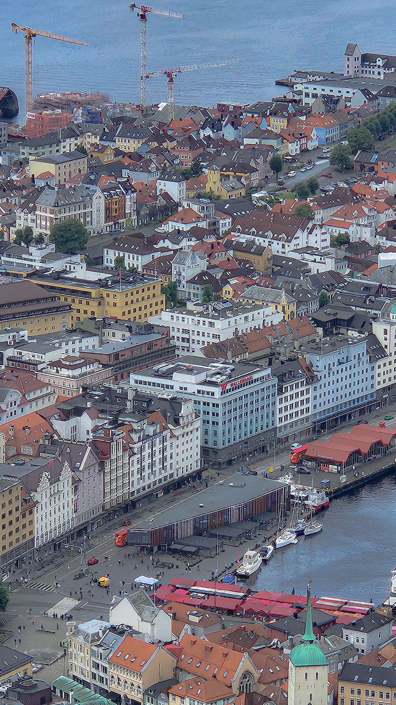
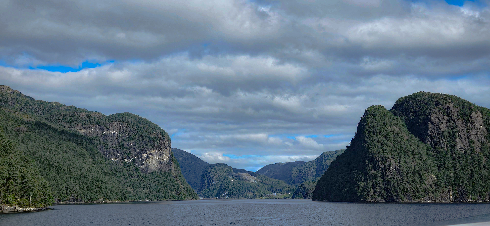
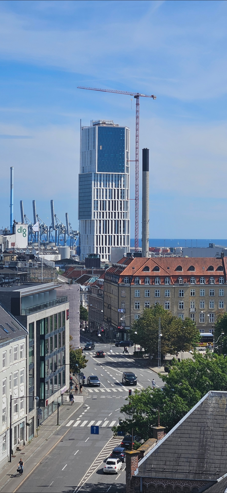
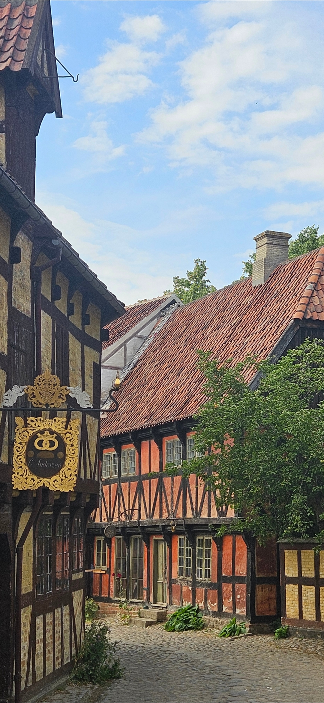
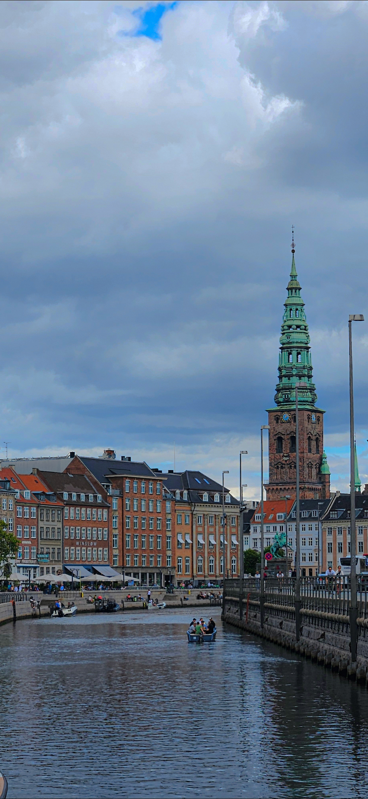
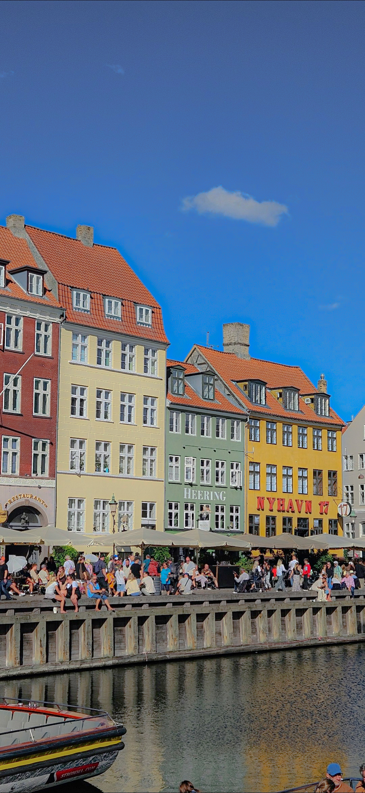
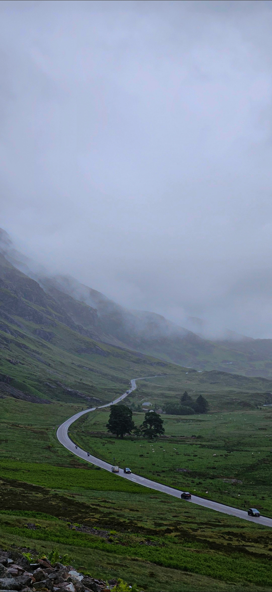
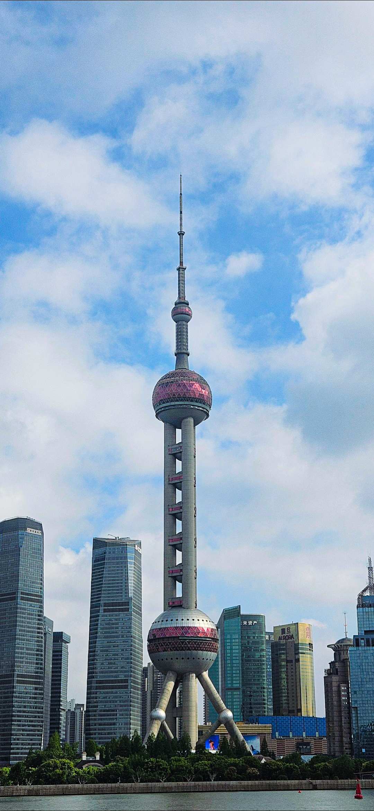
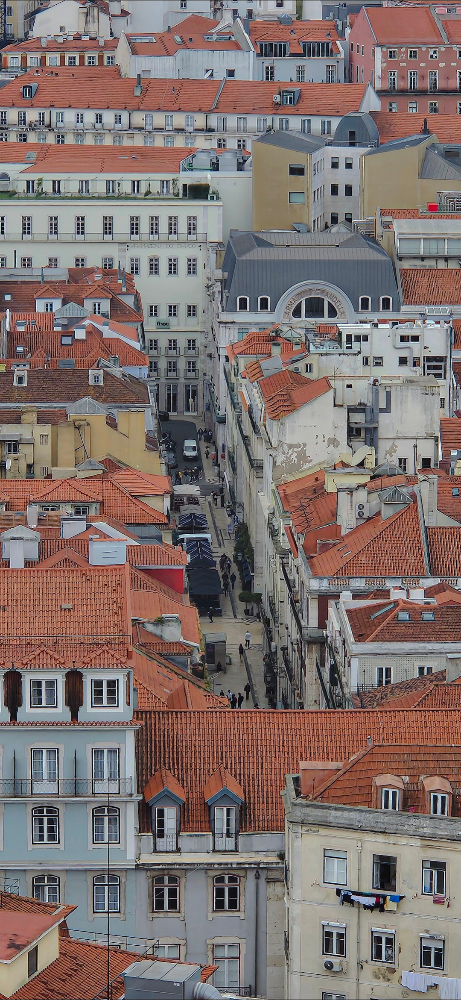
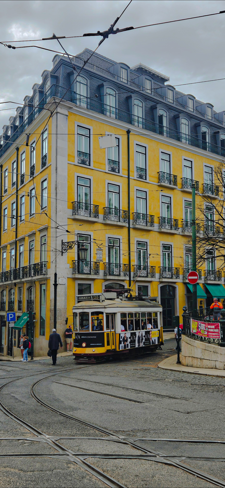
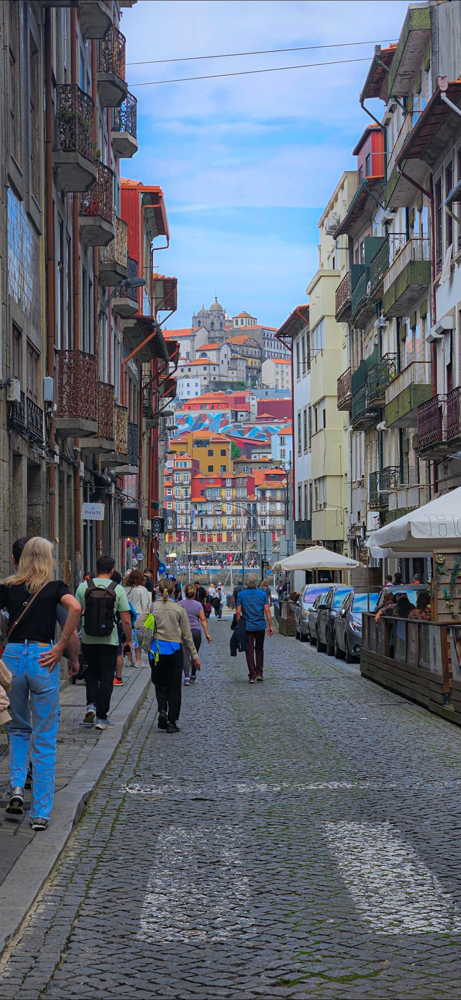
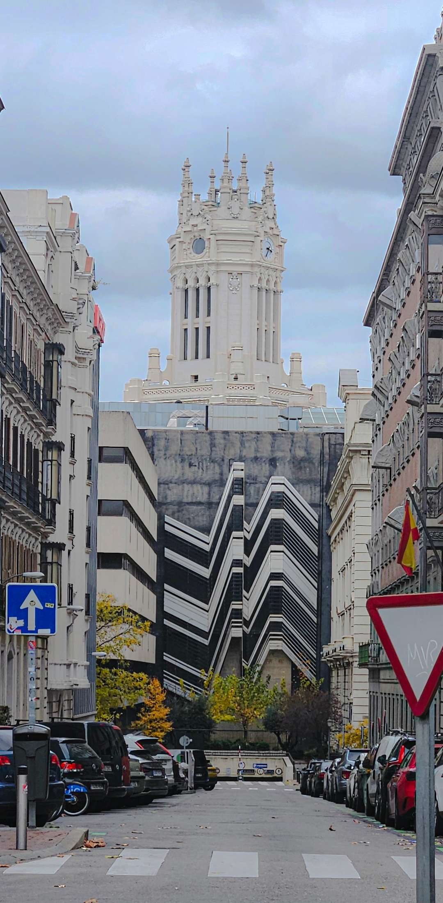
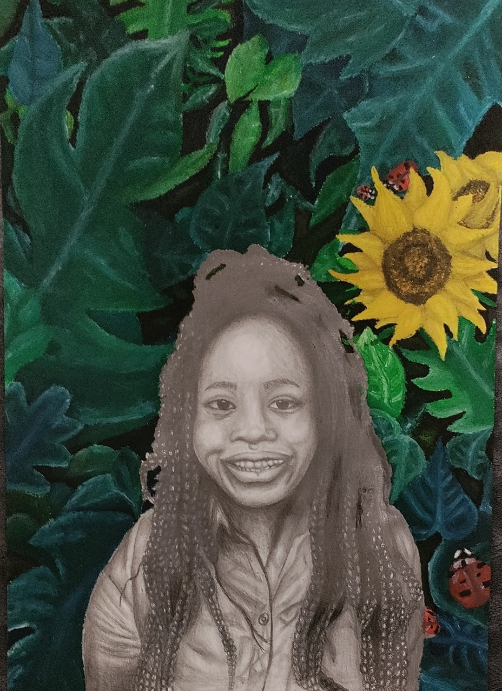
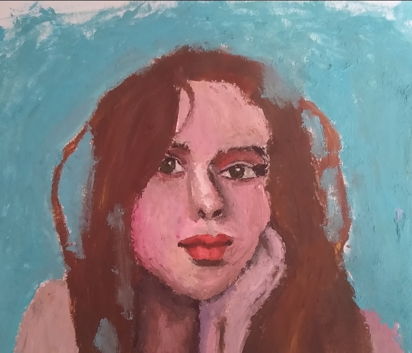